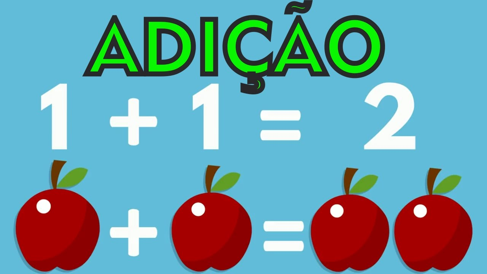
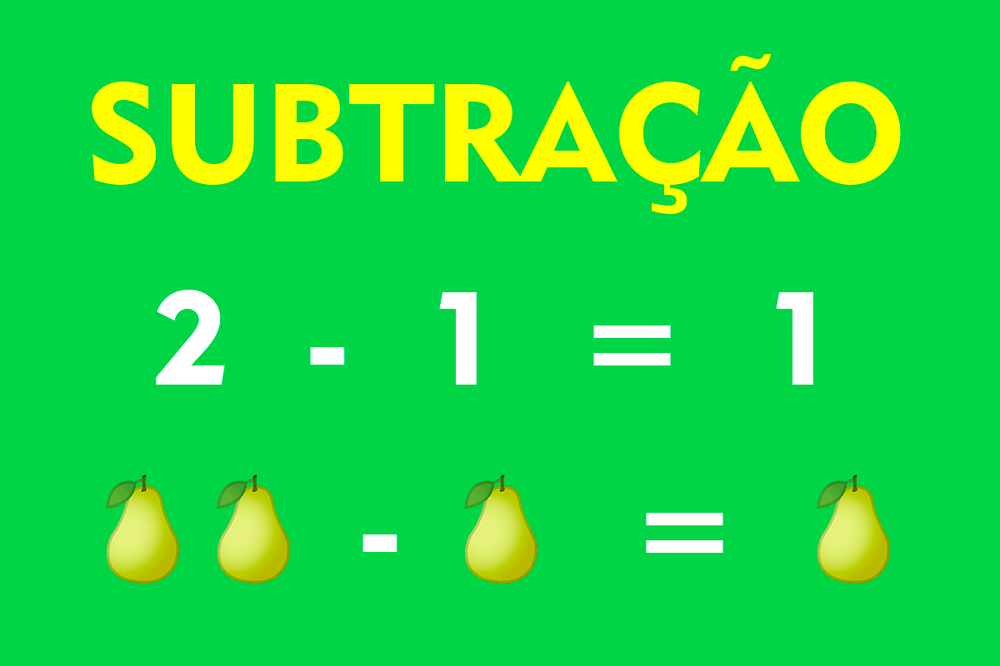
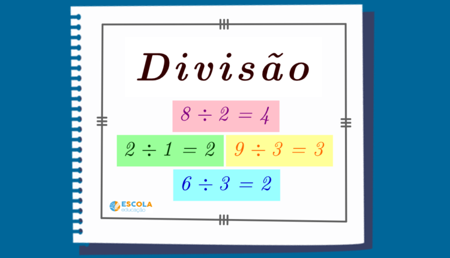

Adição
A adição é a operação matemática que reúne objetos que possuem a mesma natureza, mas que estão em dois grupos distintos. Por exemplo: João possuía uma caixa com 12 lápis de cor. Quando chegou em casa, ganhou de seus pais uma nova caixa com outros 12. Agora ele possui 24 lápis de cor. Nesse exemplo, os lápis foram somados.
Propriedades da Adição
A adição é uma das principais operações matemáticas, pois, com ela, podemos conceituar e compreender melhor as demais operações. Entender suas propriedades nos ajuda, além de resolver problemas, a compreender melhor a operação e as demais que derivam dela, como a multiplicação.
Subtração
A subtração é a operação matemática que retira elementos de mesma natureza de um grupo. Por exemplo, se João resolvesse dar 4 de seus lápis a um amigo, ficaria apenas com 20.
Propriedades da Subtração
Propriedades da subtração são formas de resolver operações matemáticas de maneira simplificada, onde o sinal de representação é o menos (-).
Multiplicação
Algo parecido acontece com a multiplicação e divisão. Todavia, antes de expor esse fato, é necessário compreender essas operações e conhecer suas propriedades.
A multiplicação é entendida como uma sequência de somas em que as parcelas são números iguais. Veja uma soma que contém 8 parcelas:
4 + 4 + 4 + 4 + 4 + 4 + 4 + 4
A multiplicação substitui a notação da soma pela seguinte:
8·4
8 é o número de parcelas e 4 é o número que está sendo somado.
Observando que o resultado da multiplicação acima é 32, pois a soma de 8 parcelas do número 4 é igual a 32, podemos definir a divisão como operação inversa: 32 objetos divididos igualmente em 8 partes. Cada parte ficará com 4 desses 32 elementos.
Propriedades da Multiplicação
As propriedades da multiplicação podem ser encontradas nos conjuntos numéricos que estudamos em todo ensino primário.
Na multiplicação temos: propriedade comutativa, propriedade associativa, propriedade distributiva, elemento neutro e elemento inverso.
Divisão
A divisão é uma das quatro operações básicas da matemática e é inversa à multiplicação. A divisão de um número consiste em seu fracionamento, na sua fragmentação, que pode ter como resultado um número inteiro ou um número decimal.
Propiedades da Divisão
O número que será dividido é chamado Dividendo (D), o número pelo qual o dividendo será dividido é chamado de divisor (d) e o resultado dessa divisão é chamado de Quociente (q). Em alguns casos, uma parcela chamada Resto (r) é formada no processo de divisão.
Exercícios
Questão 1
Qual o resultado de 64*203?
(a)-139
(b)139
(c)12992
(d)267
Questão 2
Qual o resultado de (-1024) + 24066?
(a)23042
(b)-23042
(c)-25090
(d)25090
Questão 3
Qual o resultado de 327/6?
(a)333
(b)1962
(c)-1962
(d)109
Questão 4
Qual o resultado de 968-(-165)?
(a)-1133
(b)1133
(c)-803
(d)803